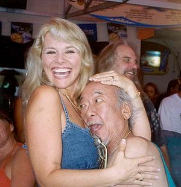
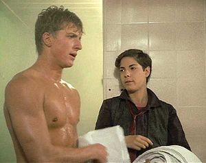
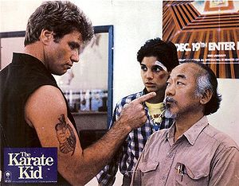
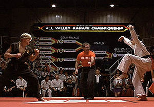
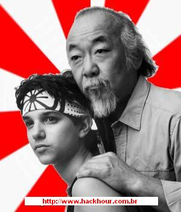

Karate Kid
 De: La Frikipedia, la enciclopedia extremadamente seria.
De: La Frikipedia, la enciclopedia extremadamente seria.
De la serie cine para todos:
Daniel haciendo la grulla.
| Director
|
Pato Motorita.
|
| Productor
|
de moratones.
|
| Actores
|
Ya te lo digo abajo, joer....
|
| País
|
Estados Anidos
|
| Año
|
1984
|
| Presupuesto
|
100 millones de yeneses.
|
| Secuelas
|
Karate kid II, III, IV, y Kung Pow.
|
Este artículo trata sobre la version original. Para el remake, véase truño.
Doble de Ralph Machio para las escenas censuradas en la sauna.
 Pat Morita, entrenando para el papel de Miyagi.
 Escena de la sauna censurada por su contenido en zoofilia y emofilia
 Martin mientras señala con el dedo y mira mal.
 Lucha final, a Daniel ya le han cortado las uñas de los pies.
 Hueles a pirata... mmm...
Película perpetrada en 1984, dirigida por Pato Motorita, que arrasó en la gala de los Oscars. Se llevó entre otros el óscar al mejor señor fruta, a la mejor grulla (superó a la de Steven Seagal en "Alerta máxima 12"), y a la mejor comida china (tenían como cocinero a Tan Daobien discipulo de Tan gao.).
Según los críticos ha sido una de las grandes obras del cine sólo superado por "Cuerpo de Diosa y Boca de Viciosa" (del mismo protagonista). En Espiña tuvo gran impacto pues terminaria por rodarse Boca de Viciosa III y el regreso de Alex Kid in miracle world. El rodaje de No mataras al vecino terminaria por rodarse en America.
Argumento
Daniel LaRusso ( Ralph Machio ), un adolescente emo que se muda junto con su madrastra a Carnifornia, como es un emo y lleva esa pinta tan chunga termina por tirale los tejos a un rubiales jefe de una panda que va a una escuela de Karate y que se comportan como unos pandilleros. Tras sufrir varias agresiones, pues el rubiales se enfado y rechazo la oferta de Daniel para ir a una sauna, es rescatado por su borracho bohemio vecino oriental, llamado Miyagi, interpretado por el actor Pat Morita, que es un antiguo soldado experto en Karate y traficante de esclavos ( parte que fue cortada del film ya que Pat realmente tenia un taller clandestino de alpargatas ). Miyagi tratara de orientar las tendencias sexuales de Daniel hacia las chicas, hecho que consigue diciendole " Oh te portas bien o te parto la boca con mi karate ", pero todabia queda el problema de las palizas, que se resuelve al pactar Miyagi con el profesor de kárate de los pandilleros que dejen en paz a Daniel, y resolver sus asuntos en un próximo combate durante un campeonato local de kárate. Entretanto, el maestro de Daniel le presenta a la ex-novia del chico rubio de los pandilleros Ali para enfurecerlo mas. Daniel tras un largo y duro entrenamiento con Miyagi ( entrenamiento que explicaremos mas abajo ), llega preparado para el campeonato, finalmente y a pesar de estar lesionado gana el campeonato en un combate final contra el rubio dandole una patada en la boca gracias a la técnica Grulla locaza que le ha enseñado su ebrio maestro de artes marciales.
Entrenamiento Kid
- " Da cera, pule cera ": en chino es: limpiame los coches gratis, técnica antiquisima de movimiento giratorio de manos que aplicado al coche lo limpia, aplicado al aire se saluda y aplicado al karate se bloquean golpes a la cara. Aqui la leccion 1.
- " Pintar valla, ariba, abajo ": me pintas la valla gratis y te digo que es una clase de karate; movimiento emo-gay de saludo que bloquea puñetazos y patadas.
- " Pinta casa, derecha, izquierda ": la misma operación solo que a los costados.
- " Pulir suelo, mmmm....": o la postura del misionero invertido, Miyagi dice que es para fortalecer brazos, pero solo consigues despellejarte las rodillas.
Personajes
- Ralph Di Machio: es Daniel Laruso en la peli, emo brutalmente maltratado fisica y mentalmente por el rubiales y su panda, que hacaba siendo concubino del ebrio Miyagi. Su incestuosa relacion con la gruya fue cortada de la proyeccion original del film.
- Noriyuki "Pat" Morita: es el señor Miyagi, pelandrusco perseguidor de pilingis y maestro de artes marciales, atomentado por su pasado de soldado y resentido con la sociedad.
- Elisabeth Sue: su papel originalmente fue para un travesti, hace de chica de todos en la pelicula, termina por juntarse con Daniel para enseñarle como funciona lo de " abajo ".
- Martin Kove: instructor de karate malvado, es primo de Brian, su maldad reside en señalar con el indice a la gente mientras les mira mal, termino por sangrarle los nudillos al intentar abrir su coche a puñetazos.
- William zabka: el rubiales, tipico maton ario, alto, de ojos azules y nariz de platano que termina con tres dientes menos, encambio se lleva dos uñas de pie mas.
Fue mas importante que el descubrimiento de que Angela Chaning en realidad era una mujer, este film desato una pasión por el karate en todo el mundo, pues todos los frikis al terminar de verla pensaron lo mismo, " osea, que me apunto a karate, doy cuatro clases, le parto la boca al gorila del instituto con el salto de la grulla locaza y encima me quedo con la chica ", esto hizo bajar la población mundial de frikis casi a niveles de 0%, pues los gorilacos de todos los institutos al ver venir a un tipejo de 40 kilos con una cinta en el pelo diciendo: kiiiiaaaa, los liquidaban inmediatamente.
Además, por si fuera poco, está película proporcionó cientos de leros a los médicos que se enriquecían curando, piernas y brazos rotos y otras lesiones postulares en las articulaciones de los pardillos que intentaban imitar la pelí en los propios cines.
Curiosidades
- La escena del primer combate donde es rescatado Daniel tuvo que ser rodada 11 veces porque el señor Miyagi ( Pat Morita ) golpeaba realmente en los testiculos a los actores.
- Se planearon 3 finales diferentes para el film, entre los cuales estaba uno que terminaba con Daniel haciendo un discurso afavor de los emos del mundo y fugandose con Miyagi a Las Vegas para casarse.
- La parte de atrapar la mosca con los palillos chinos se rodo " mas de 24 veces " porque cuando Daniel cogia a la mosca terminaba por comersela.
- El amaestramiento de moscas para la escena de los palillos costo 9,7 millones de leros.
- El personaje de Ali, originalmente iba a ser interpretado por un trasvesti ( la pantoja de Puerto Rico ), pero finalmente se contrato a una chica dado que no se entendería la metáfora filosófica.
- La película recibió el Oscar al mejor director, a pesar de que no mandaron tres códigos de barras de las salchichas a la dirección del programa.
- En España el titulo trajo muchos problemas, puesto que fue traducido en muchos pueblos por Karate chico o Pequeño Karate.
- En la escena del combate final, a Daniel ( Ralph ), le tuvieron que cortar las uñas de los pies pues al hacer la gruya locaza se corría el riesgo de que el rubiales ( William zabka ) muriese empalado.
- Para la edición especial en DVD, se hicieron 10.000 muñecos G.I Joe del señor Miyagi.
- Ralph Di Machio rechazo el proyecto La princesa prometida en el que seria la heroína por esta película.
- Empezo a rodarse en Bailén pero debido a lo caros que están alli los tercios termino por rodarse en Lepe.
El comentario

|
En realidad la película es una mierda como todos los estúpidos que practican esa arte marcial que ni se debería considerar hoy en día. Hagan muay thai o defensa personal mariconas.
|

|
| Un Argentino ignorante.
|
Esto se encontraba en el artículo original antes de ser adoptado, hay dos posibles explicaciones para que el autor escribiera eso:
- Se puso chulito con otro que pasaba tranquilamente, resultando que era un cinturón negro de Karate y el karateka le golpeo el pescuezo hasta que se tocó el culo con la punta de la nariz y por eso esta tan resentido.
- Se apuntó a clases de Karate, pero como era muy torpe y liviano de mente no aprendió nada y se puso chulito con otro que pasaba tranquilamente, resultando ser un tipo normal que igualmente le piso el pescuezo.
Autor(es):
- Kenedhor
- Chrysanthus
- Chusma
- Doctor grijander
- Frikiman
- Aque
- Roms
- Bazuke
- Khazike Khashondo
- Frikih
Frikipedia 2005-2016, Licencia
GFDL 1.2 - Extraído por FrikiLeaks